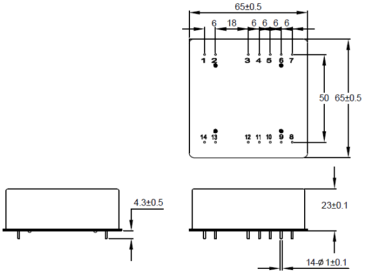
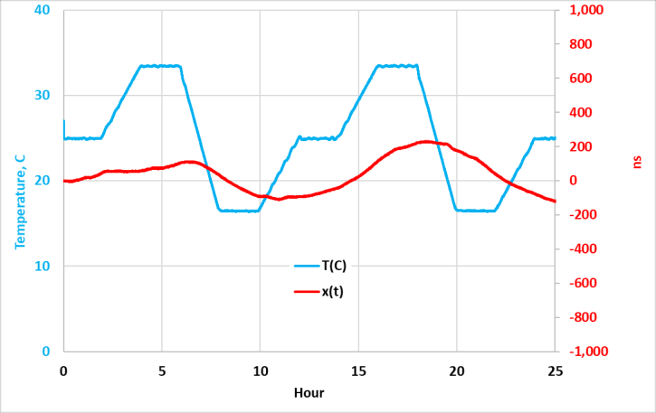
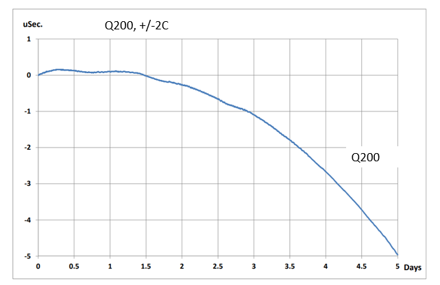

Technical Plots & Mechanical Drawings
Laboratory Characterization & Engineering Dimensions
Package Dimension

Bottom and side view mechanical outline & pin assignments
Short Term Hold Over

Short-term holdover & temperature excursion characterization
5 Day Holdover Accumulation Curves

Extended 5-day cumulative holdover phase error trajectory
Core Architectural Highlights
✓
1PPS GNSS Disciplining
Disciplines to 1 ns RMS phase and <1×10-12 in frequency from satellite timing receivers.
✓
Adaptive DSP Holdover
Maintains ±1.0 μs / 24-hour holdover over ±5°C ambient temperature swings when GNSS is lost or jammed.
✓
Simultaneous Multi-Outputs
5 MHz, 8.192 MHz, and 10 MHz HCMOS frequency outputs alongside synchronized 1PPS.
✓
Serial Telemetry & ToD
Integrated RS232 serial telemetry reporting 1-second phase resolution (≤1 ns) and Time of Day.
Technical Specifications (Rev J Standard)
| Supply Voltage | +5.0V DC (±5%) |
| Steady-State Power | 3.0 W typ @ 25°C |
| Warm-Up Power & Time | 9.0 W max (5 min to within ±5 ppb) |
| Disciplined Accuracy | <1×10-12 Frequency • 1 ns RMS Phase to GNSS |
| 24-Hour Holdover (Code 10) | ±1.0 μs / 24h (over ±5°C temperature variation) |
| 24-Hour Holdover (Std 15) | ±1.5 μs / 24h (over ±5°C temperature variation) |
| Clock Outputs | 10 MHz standard (5 MHz and 8.192 MHz available) |
| Operating Temperature | -10°C to +70°C (Code A) / -20°C to +70°C (Code B) |
| Digital Communications | RS232 (57600 baud, 8-N-1) • Continuous 1-second phase report |
| Dimensions & Form Factor | 65.0 × 65.0 × 23.0 mm (2.56 × 2.56 × 0.91 in) • 51x51mm opt. |
Interface & Pin Assignment
| Pin # | Signal | Type | Description |
|---|---|---|---|
| 1 | VCC | Power | +5.0V DC Main Power Supply Input |
| 2 | GND | Power | Common Ground & Chassis Shield |
| 3 | 1PPS_IN | Input | GNSS Receiver / Satellite Reference 1PPS Input |
| 4 | 1PPS_OUT | Output | Disciplined 1PPS Pulse Output (Jitter <1 ns RMS) |
| 5 | RF_OUT | Output | 10 MHz Precision Reference Clock Output (HCMOS / Sine opt.) |
| 6 | TXD | Output | RS232 Serial Telemetry Data Output (ToD & Phase) |
| 7 | RXD | Input | RS232 Serial Configuration Command Input |
| 8 | LOCK_IND | Output | Discipline Lock Status (High = Synchronized & Locked) |
Model Q200 Engineering FAQ
How does Model Q200 protect smart grid PMUs against GNSS jamming? ↓
When GNSS is active, Model Q200 continuously trains an adaptive Kalman filter on internal temperature excursions and crystal aging. During jamming or spoofing attacks, it activates proprietary holdover algorithms, maintaining ±1.0 μs timing error over 24 hours (±5°C variation), keeping PMUs fully compliant with IEEE C37.118 TVE < 1%.
What simultaneous frequency outputs are available? ↓
Model Q200 outputs a primary 10 MHz reference clock alongside a synchronized 1PPS pulse (<1 ns RMS jitter). Custom firmware options provide simultaneous 5 MHz and 8.192 MHz auxiliary outputs to drive legacy telecom and power substation architectures.
Model Q200 Inquiries
Contact our North Andover engineering lab for lead times and pricing.